Legenda
Dokumentacija projekta
Opis projektnog zadatka
Općenito
Ovaj projektni zadatak bavi se problematikom stranice za prijavu šteta. Nužno je kreirati web mjesto koje omogućava otvaranje javnih poziva za prijave nastalih šteta. Registrirani korisnici se prijavljuju sa svojim štetama na te javne pozive u nadi da će dobiti subvenciju za oporavak. Javne pozive stvaraju održavaju moderatori. Moderatori su također zaduženi za kontrolu prijava za štete.Javni poziv
Svaki javni poziv nudi mogućnost donacije kako registriranim, tako i neregistriranim korisnicima, za vrijeme svojeg trajanja. Kada mu prođe rok, nisu više moguće donacije. Kada moderatori raspodijele sredstva na prijave šteta, javni poziv se zatvara. Svojim zatvaranjem javni poziv omogućuje i neregistriranim korisnicima pregled prijavljenih šteta.Prijava štete
Prijavljene štete opisuju podaci "naziv", "opis" i "oznake". Naziv je korisnikov naziv svoje štete, u opisu detaljnije opisuje zašto mu je subvencija potrebna, a oznake su riječi odvojene razmakom koje omogućuju neregistriranim korisnicima jednostavnije pretraživanje već gotovih šteta.Administriranje
Administrator je samo jedan i ima mogućnost upravljanja cijelim sustavom. Njegove najveće ovlasti su upravljanje moderatorima, blokiranim korisnicima i konfiguracijom cijelog sustava. Konfiguracija uključuje broj stavki po ispisu/tablici, trajanje kolačića, trajanje sesije itd.Opis projektnog rješenja
Dizajn
Dizajn rješenja uvelike je potpomognut korištenjem "scss" skriptni jezik. Odabrao sam ovaj jezik jer mi
je
uvelike olakšao rad s medija querijima. Također, "scss" mi je omogućio jednostavno
korištenje varijabli u "css" kodu. Tim varijablama sam ostvario jednakost boja na svim pogledima, a i
vremenski u vrlo kratkom roku vrlo jednostavno - ali kvaliteno - implementirao pogled za disleksične
osobe.
Dizajn je uglavnom izrađivan po "mobile-first" pristupu, odnosno (s)css kod je definiran za mobitele, a
medija querijima prilagođen tabletima/desktopima. Uglavnom jer sam na par mjesta "pribjegao" inline
stylingu.
Odabrao sam primarnu boju bijelu i sekundarnu boju crnu kako bih stvorio ugodan kontrast na svakom
pogledu.
Kao naglašenu boju koristim narančastu jer ukazuje na problematiku (štete, problematična situacija, nije
sve
u redu, odnosno "zeleno"), a ipak za razliku od npr. crvene boje narančasta je boja koja je ugodna oku
(aludira na naranču kao na ukusno voće).
Baza podataka
Kičmu rješenja čini pomno osmišljena i dobro organizirana bazi podataka. Temelje za bazu postavio sam tijekom 2. zadaće na kolegiju, no od tada sam ju mnogo puta promijenio i prilagodio baš ovome rješenju. Koristeći alat MySQL Workbench generirao sam sve upite.
Programski kod na strani poslužitelja
U PHP-u sam napravio tri osnovne PHP datoteke:
- Database.php
- UserControl.php
- OutputControl.php
Implementacija ovih klasa detaljnije je opisana u poglavlju ispod. One kontroliraju i diktiraju tokove podataka i programsku logiku iza cijelog rješenja.
Postoje PHP datoteke koje generiraju sučelje i one se nalaze u "root" direktoriju rješenja. PHP datoteke koje se bave nekom specifičnom funkcionalnosti koja ne spada pod upraviteljstvo niti jedne od gornjih triju datoteka nalaze se u "control" direktoriju.
Programski kod na strani klijenta
Web mjesto ne bi funkcioniralo u potpunosti bez programskog koda na strani klijenta. Ovaj kod bavi se osnovnim provjerama unesenih podataka i animacijama, a ono najbitnije - sadrži brojne funkcije koje AJAX pozivima omogućavaju jednostavno i direktno funkcioniranje administratorskog panela.
Sigurnost
Posebna pažnja posvećena je sigurnosti sustava. U datoteci "OutputControl.php" postoji posebna klasa "Prevent" (implementacija objašnjena ispod) koja osigurava da su SVI podaci koji idu na ekran očišćeni od posebnih HTML znakova i time učinkovito (rekurzivno za PHP polja) onemogućava XSS tip napada. Također osigurava da podaci koji idu u bazu budu potpuno sigurni za bazu (iako svi podaci prolaze kroz "prepared" MySQL funkcije).
Napadi
Siege
Alatom siege dobio sam dobre rezultate (15 sekundi) na sve skripte u "root" direktoriju.U datoteku "urls.txt" postavio sam sve linkove na skripte u "root" direktoriju i usmjerio alat siege na njih.
Rezultati su dostupni u drugoj datoteci "siege_output.txt" na koju se može baciti pogled i ispod.
OWASP ZAP
Alatom OWASP ZAP simulirao sam napade sa svim ulogama na stranicu. Slike ekrana uzetih tijekom tih napada vidljive su u nastavku.Slike tijekom napada
Prikaz početka napada 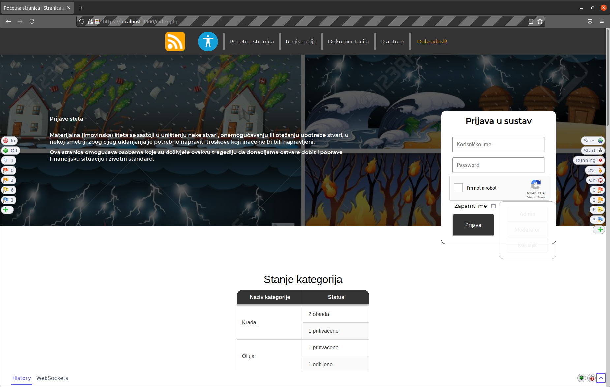 Tijekom napada 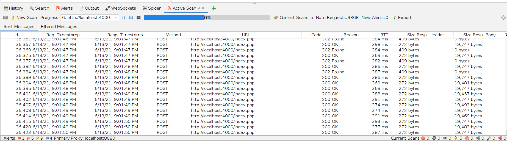 Napad iz perspektive korisnika 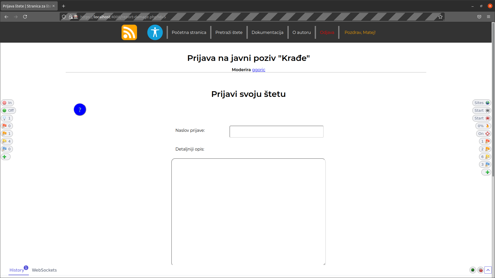 Napad iz perspektive moderatora 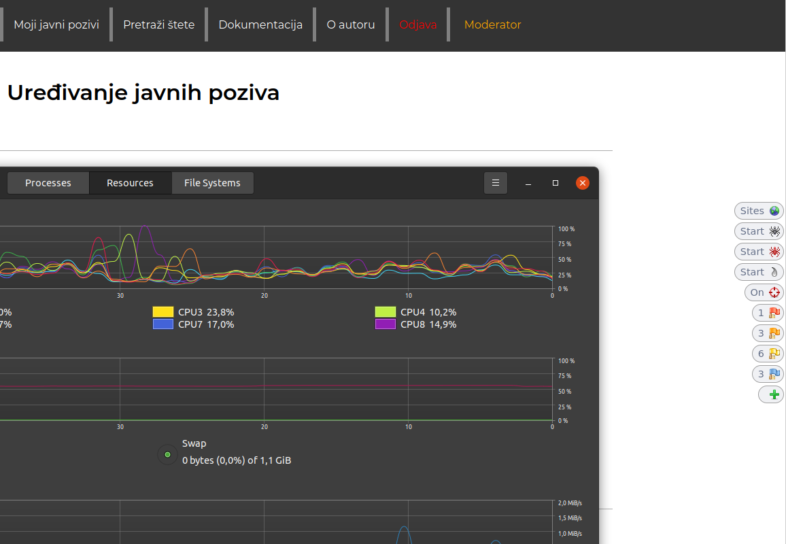 Napad iz perspektive administratora 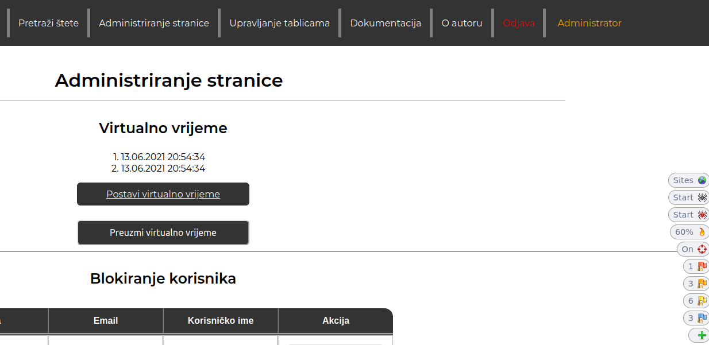Slike nakon napada
Statistika korištenja nakon napada daje sliku korištenosti web mjesta neke Fortune 300 korporacije 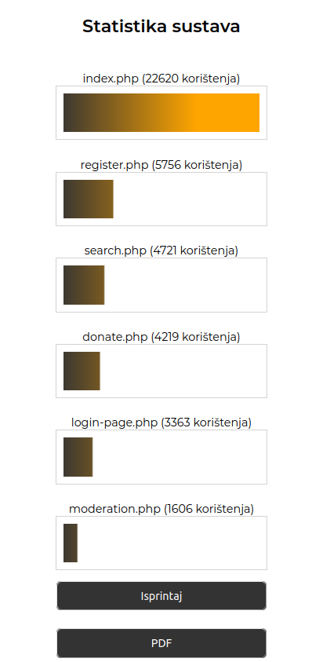 Obavijesti informativne prirode 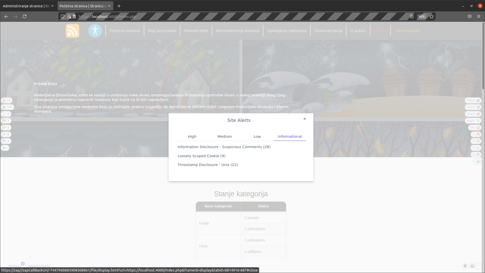 Obavijesti niske važnosti 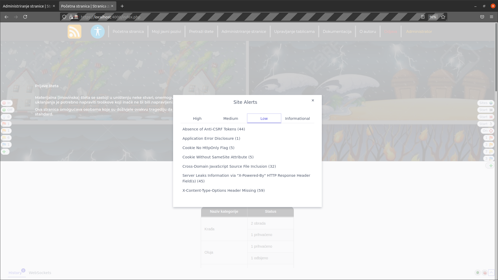 Obavijesti srednje važnosti 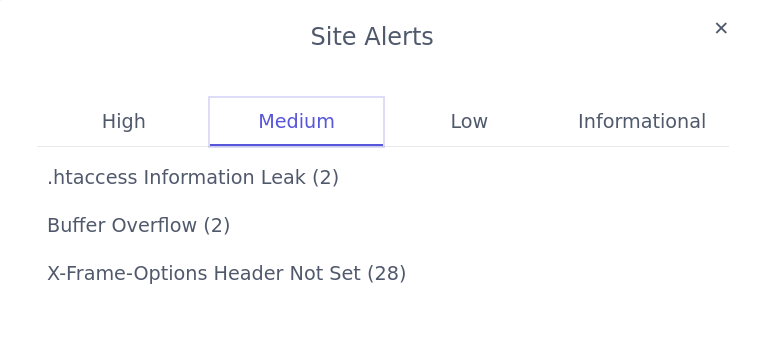 Obavijesti visoke važnosti 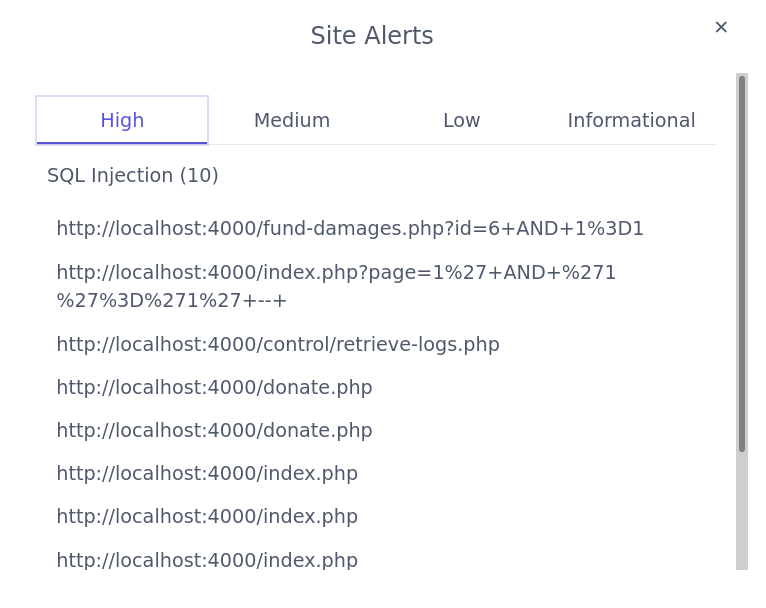Moj komentar na obavijesti visoke važnosti
Zatekle su me obavijesti da je moguć SQL Injection na mojoj stranici. Ipak, detaljnijim uvidom,
shvatio sam da je riječ o "false-flag" upozorenju, odnosno kako je "OWASP ZAP" modificirao parametre GET
i POST metoda, moja stranica je odgovarala uhvaćenim problemima iz baze logičke prirode (npr. "Nemate
pristup ovoj stranici")
"OWASP ZAP" je takve poruke shvatio kao različito ponašanje SQL baze i zaključio da baza odgovara na
mutirane parametre, dok je ona zapravo samo obavještavala korisnike o nedozvoljenim operacijama.
ERA model
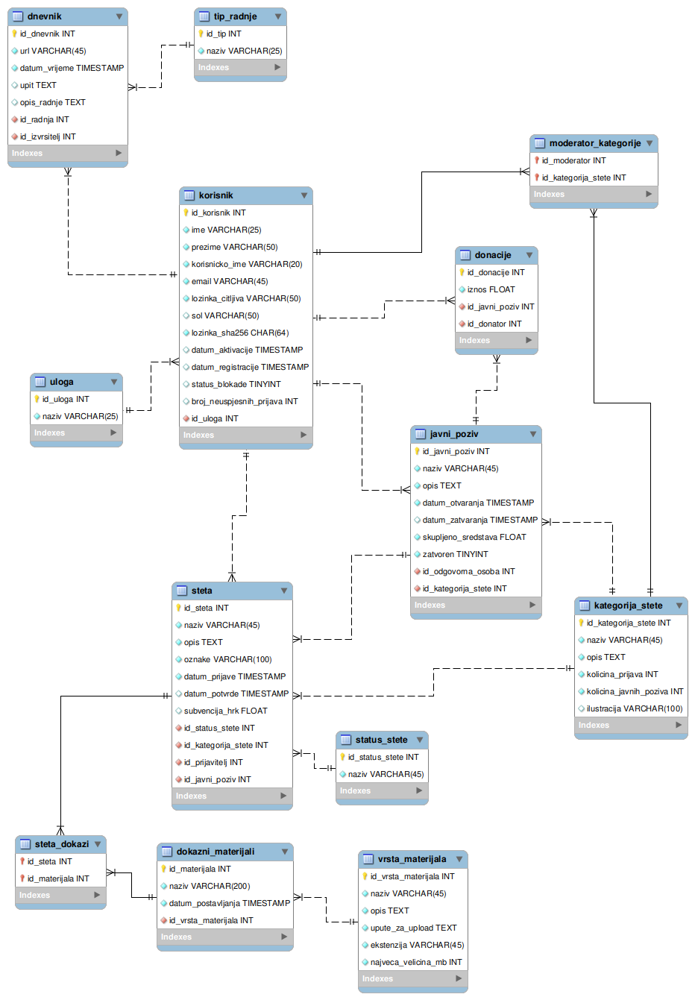Popis i opis skripata
Općenito
Sav PHP kod pisan je držajući smisao i dobre prakse objektno orijentiranog pristupa na pameti. Najbitnije funkcionalnosti grupirane su u klase čiji su objekti samodostatni, ali ne i međusobno nezavisni. Zato pri svakoj pogrešci objekti bacaju iznimke sa točno definiranim šiframa te opisima koji se potom ispisuju korisnicima. Tako je onemogućena pojava "tajanstvene" pogreške koja ruši cijeli sustav pri običnoj pogreški u SQL upitu bez komentara. Ilustracija stabilne implementacije aplikacije pomoću iznimaka. 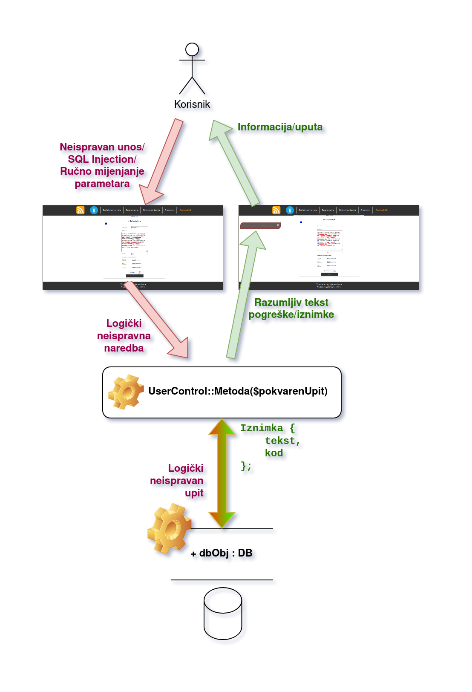PHP skripte su podijeljene u dva direktorija:
Root direktorij
Sve skripte kojima je namijenjeno da se puno koriste (definiraju sučelja) nalaze se u "root" direktoriju. To su iduće skripte.- administration.php
- fund-damages.php
- moderation.php
- rss.php
- admin-table-management.php
- donate.php
- index.php
- register.php
- search.php
- create-public-call.php
- edit-public-call.php
- login-page.php
- report-damage.php
Omogućava administratoru upravljanje cijelim sustavom. Funkcionalnosti koje pruža u potpunosti su omogućene preko Javascripta i AJAX poziva. Ova stranica samo poziva "Smarty" objekt koji definira sučelje
Omogućava moderatoru upravljanje prijavama šteta na odabranom javnom pozivu (GET parametar "id" koji se potom sprema u sesiju kako bi se šifra javnog poziva mogla očuvati i tijekom obnove stranice (koja se često odvija zbog PHP implementacije svih funkcionalnosti)
Omogućava moderatoru upravljanje javnim pozivima kojima ima pristup. Također nudi mogućnost stvaranja novog javnog poziva
Omogućava bilo kojem korisniku praćenje 10 posljednjih šteta preko RSS kanala
Omogućava administratoru potpunu CRUD kontrolu nad bazom podataka ovog rješenja (osim izmjene
primarnih ključeva redaka). Implementacija je obavljena putem AJAX-a. U pregledu se obavlja
straničenje. Stupce tablice moguće je sortirati (ASC/DESC) te pretraživati po nekoj odabranoj
vrijednosti.
Funkcionalnost je implementirana tako da Javascript AJAX-om prvo pošalje zahtjev za nazivima svih
tablica, potom - nakon korisnikova odabira tablice - šalje naziv tablice i kao odgovor dobiva
zaglavlje tablice. Nadalje poslužitelj pamti o kojoj je tablici riječ u sesiji pa nema potrebe da se
AJAX-om stalno šalju nazivi te iste tablice u daljnim zahtjevima. AJAX-om se nadalje samo zahtjeva
tijelo tablice i šalju iz redaka koji se žele mijenjati (dosta cool, ponosan sam na ovo 😁)
Omogućava bilo kojem korisniku doniranje u sredstva odabranog javnog poziva
Početna stranica. Stranica nudi kratki pregled statistike prihvaćenosti šteta, a i pregled svih javnih poziva. Pri "desktop" rezoluciji nudi funkcionalnost prijave (s ponuđenom testnom mogućnošću prijave u sve uloge), a pri manjim rezolucijama ta je mogućnsost na odvojenoj stranici
Stranica koja neregistrianim korisnicima omogućava funkcionalnost registracije. Provjere podataka
obavljene su kako na korisničkoj, tako i na poslužiteljevoj strani.
Prilikom registracije šalje se (novonastalo) korisničko ime kao GET parametar u linku na uređeni
html mail.
U dnevnik sustava se ne upisuje čitljiva šifra iz upita i administrator nema pregled čitljive
lozinke u dnevniku u upitu
Omogućava u potpunosti pregled svih šteta registriranim korisnicima ili neregistriranim pregled šteta na već gotovim javnim pozivima (pretraga po oznakama)
Omogućava moderatorima sučelje za kreiranje javnog poziva s rokom završetka
Omogućava moderatorima sučelje za uređivanje javnog poziva s mogućnošću zatvaranja istog
Omogućava prijavu u sustav korisnicima mobilnih uređaja i tableta
Omogućava registriranim korisnicima prijavu nove štete moderatorima na pregled
Control direktorij - osnovne datoteke
Sve skripte kojima je smisao kontrolirati sigurnost i stablinost aplikacije nalaze se u "/control"
direktoriju.
Tri osnovne PHP skripte ove aplikacije nalaze se u ovom direktoriju
- Database.php
- DB
Objekt ove klase u svom konstruktoru ponajprije uspostavlja vezu s bazom. Tu vezu tada pamti u privatnom atributu "$mysqli_object". Sam objekt tada nudi dvije osnovne javne metode: "ExecutePrepared" i "SelectPrepared", gdje prva proširuje funkcionalnost druge, a druga uključuje prvu. Prva metoda samo izvršava "prepared" upit, dok ga druga izvršava, čita objekt u asocijativno polje te u slučaju da je dohvat bio prazan, baca iznimku.
U ostatku raznolike ponude metoda koje nudi uglavom su metode koje ovise o gornje dvije, a nude kompleksnije implementacije logika pri radu s bazom koje nije imalo smisla implementirati u nekim "višim" dijelovima aplikacije, već je ovako obavljena svojevrsna apstrakcija - Log
Omogućava rad s dnevnikom. Objekt ove klase u konstruktor prima objekt klase DB koji onda Log objekt koristi za komuniciranje s bazom i upisivanje u dnevnik.
Bitno je napomenuti da objekti ove klasa ne smiju alocirati DB objekte jer bi to dovelo do rekurzivnog alociranja. Riječ je o tome da DB objekt, koji je daleko više korišten od Log objekta, već inicijalizira Log objekt u vlastitom konstruktoru, a proslijeđuje mu u konstruktor samoga sebe! Time DB klasa uvijek može upisivati stvari u bazu. Ovo sam ovako implementirao jer objekti DB klase ionako najviše koriste dnevnik, odnosno većina zapisa u dnevniku je vezana uz rad sa samom bazom.
Nije nadomak reći da ova klasa sadržava konstante prepisane iz baze podataka koje opisuju vrste zapisa u dnevniku - UserControl.php
- OutputControl.php
Sadrži dvije vrlo bitne klase: "Log" i "DB".
Sadržava istoimenu statičku klasu koja omogućava kontrolu korisnika. Primajući (očišćene od
malicioznih znakova) podatke svoje raznolike statičke metode, obavlja svu logiku
registracije, prijave, blokiranja, slanja mailova itd.
Iznad opisane skripte u root direktoriju, koje implementiraju sučelja, uglavnom ovise o UserControl
klasi ne samo zbog pozadinske logike, već i zbog komuniciranja s bazom preko ove klase. Tu objektno
orijentirani pristup u izradi ove aplikacije uistinu dolazi do izražaja. Naime, ako primjerice dođe
do problema u bazi podataka, bacanjem i hvatanjem iznimaka ta pogreška se uredno ispisuje na ekranu
(najčešće u globalnom balončiću za probleme, "errorGlobal").
Za kraj, implementira provjeru Googlove ReCaptche i time omogućava jednostavnu implementaciju i
korištenje tog veoma korisnog sustava blokiranja napada u cijeloj aplikaciji.
Osigurava "čistoću" podataka. Konkretno, statičkom klasom "Prevent" i njenim statičkim metodama "XSS"
i "Injection" spriječava napade. Pri svakom upitu za bazu ili čitanjem iz baze podaci u pitanju
prolaze kroz te metode. U slučaju statičke metode "XSS", svi podaci (rekurzivno kod polja) prolaze
kroz funkciju "htmlspecialchars". U slučaju statičke metode "Injection", podaci se "filter_input"
funkcijom čiste od opasnih znakova, a njenu funkcionalnost dodatno proširuje "XSS" metoda.
Neovisno o ovoj funkcionalnosti, svi korisnički podaci koji se ispisuju se u "smarty" proširenju
(opisano kasnije) dodatno čiste "htmlspecialchars" funkcijom.
Nadalje, ova skripta sadržava klasu "PagingControl" čiji objekt ima mogućnost pomoću GET parametara
obavljati straničenje na način da baza uistinu šalje samo one podatke koji se na odabranoj stranici
trebaju pokazati.
Kod AJAX-a posrednik bude neka druga skripta koja onda Javascriptu šalje podatku od objekta ove
klase
Control direktorij - pomoćne datoteke
Ostale pomoćne PHP skripte (nimalo manje bitne!) ove aplikacije nalaze se također u ovom direktoriju
- _page.php
- activate.php
- change-pass.php
- constants.php
- login.php
- block-user.php
- check-username.php
- logout.php
- retrieve-logs.php
- config.php
- forgotten-pass.php
- table-management.php
Osnovna datoteka, uključuje se na svim tablicama. Prefix "_" mi je pomogao uvijek imati oko na ovoj
skripti ističući ju od ostatka.
Uključuje gornje tri skripte, kao i "smarty"
dodatak, usklađuje putanje, osigurava HTTPS protokol na svim stranicama, provjerava sve globalne
postavke i namješta razne globalne varijable
Omogućava aktiviranje računa preko UserControl::ConfirmUserAndLogin metode koristeći SHA256 hash deriviran iz čitljive lozinke i soli korisnika te korisničkog imena
Omogućava promjenu lozinke korisnika.
Baza preko pseudoslučajnog niza pronalazi korisnika kada on preko maila dođe
na formu ove skripte za upisivanje nove šifre (korisnik se pronalazi tek nakon što upiše šifru, iz
sigurnosnih razloga)
Sadržava definicije jednostavnih konstanti poput putanje konfiguracijske datoteke, punog url-a do
trenutne skripte, relativnu putanju do root direktorija itd.
Ovu skriptu druge skripte uključuju (najčešće već unutar "_page.php" skripte)
Omogućava jedinstveno "iskustvo" prijave kako na početnoj stranici za desktop korisnike, tako i na
stranici za prijavu za mobilne/tablet korisnike. Datoteka se uključuje tako da je njezin kod
praktički prekopiran na mjesta gdje je funkcionalnost prijave zahtjevana.
Prilikom uspješnog logiranja se resetira brojač neuspješnih prijava.
Prilikom uspješnog logiranja se postavlja brojač neuspješnih prijava
Vraća JSON, omogućava administratoru blokiranje korisnika AJAX-om. Vraća odgovor o uspješnosti provedbe, a to kao odgovor na POST argumente "username" i "action", gdje je "action" 0 za odblokiranje ili 1 za blokiranje
Vraća JSON neregistriranom korisniku prilikom registracije. AJAX-om se provjerava zauzeće korisničkog imena i ovisno o odgovoru ove skripte, na sučelje se ispisuje poruka. Provjera se odvija još jednom na poslužiteljskoj strani, naravno
Obavlja uništavanje sesije i povratak na glavnu stranicu
Vraća JSON, omogućava administratoru pregled dnevnika po stranicama.
Nadalje, omogućava filtriranje po korisniku, vrsti akcije, ili pregled frekvencije rada korisnika.
Funkcionira kao API za administratoreve AJAX upite (vraća JSON) omogućava administratoru potpunu kontrolu nad sustavom i konfiguracijskim postavkama. Zbog visokog sigurnosnog rizika, ova skripta zahtjeva da je u sesiju kao trenutni korisnik upisan administrator
Prilikom resetiranja šifre, mailom se šalje poseban link koji sadržava identificirajući niz za korisnika. Identificirajući niz nastaje pretvorbom 25 pseudoslučajnih bajtova u heksadecimalnu notaciju (točno 50 znakova koliko je predviđeno za najveću čitljivu lozinku). Taj niz se sprema u već postojeći stupac "lozinka čitljiva" koji ionako postoji samo za potrebe testiranja rješenja ovog projekta
Funkcionira kao API za administratoreve AJAX upite vezane uz rad (CRUD operacije) nad tablicama
(vraća JSON), a omogućava administratoru potpunu kontrolu nad svim tablicama.
Sama funkcionalnost upravljanja tablicama opisana pod skriptom "admin-table-management.php"
Omogućava straničenje zahtjevanih tablica
Popis i opis korištenih tehnologija i alata
Visual Studio Code
Izrada ove aplikacije je odrađena u VSCode-u - meni kao osobi koja programira više sati dnevno - a i po
svim statistikama - najboljeg IDE-ja proteklih godina, na svijetu.
Tu bih volio izraziti svoje negodovanje na guranju NetBeans okruženja studentima na laboratorijskim
vježbama pod izlikom da će se on kasnije koristiti. To je kao da u autoškoli možete birati (besplatno!)
učiti polaznike voziti na Zastavi 101 i na Mercedesu A klase. Odabrati Zastavu zato što će se i na
ispitu vožnje nakon odrađenih sati opet koristiti Zastava 101 nije smisleno.
Summa summarum, razmislite o korištenju VSCode-a u budućim semestrima.
MySQL Workbench
Program MySQL Workbench (Linux verzija) služio mi je vrlo dobro kao generator SQL upita koje bih u grafičkom sučelju ili u konzoli pomoću nadopunjavajućih prijedloga logički definirao, a potom jednostavno prekopirao u PHP skripte i prilagodio "prepared" upitima.
Vrlo korisna funkcionalnost mi je bila "Server -> Data Export" koja mi je omogućavala redovito "backupiranje" baze sa sadržajem.
OWASP ZAP
Za testiranje sigurnosti aplikacije, korišten je moćan alat OWASP ZAP. Ovim alatom stranica je napadnuta
i pronađeno je više sigurnosnih nedostataka koji su potom zakrpani.
Konačni preostali sigurnosni nedostaci koje je ova aplikacija ispravno prijavila već su ranije u
dokumentaciji objašnjeni i dokazani da su "false-flag".
Siege
Alatom siege testirano je opterećenje poslužitelja (lokalno, naravno), a njegovi rezultati u čistom tekstualnom obliku su navedeni ranije u dokumentaciji.
Git/GitHub
Za kontrolu verzija koristio sam posebni privatni repozitorij. To mi je omogućilo efektivno pregledavanje i vraćanje na ranije verzije aplikacija, a i sigurnosne kopije sigurnosnih kopija baze podataka (u obliku SQL naredbi).
Popis i opis vanjskih (tuđih)Tehnologije Vanjski_modulimodula/biblioteka
jQuery
Za lakše programiranje na strani korisnika koristio sam dodatak za Javascript, jQuery. Pomoću njega sam ostvario mnoštvo kompliciranih funkcionalnosti, od koji je daleko najkompleksnija upravljanje (CRUD) tablicama u bazi podataka, sve unutar "sitnih" 1310 linija koda.
Smarty
Za lakše programiranje na strani poslužitelja, konkretno za jednostavno upravljanje mogućnostima i prikazom podataka na sučelju, upotrijebio sam dodatak za PHP "Smarty". Taj dodatak uvelike mi je olakšao posao kod iteriranja kroz podatke i njihovo efikasno ispisivanje.
SCSS
Za kraj, ni slučajno najmanje bitan vanjski modul jest "SCSS", glavna sintaksa za "SASS" pre-procesor.
"SCSS" datoteke se kompajliraju u "CSS" datoteke, no uvelike su lakše za pisanje. Posebna prednost
korištenja SCSS-a u ovome radu (mislim nad većinom tuđih studentskih radova) jest jednostavnost
implementiranja različitih izgleda svih klasa i stilova po identifikatorima na različitim
rezolucijama.
Nadalje, olakšna mi je izrada pogleda za disleksične osobe. Korištenjem varijabli u SCSS-u,
implementacija drugačijeg pogleda istih stilskih datoteka nije bila ništa kompleksnija od promjena
vrijednosti tih varijabli (boja, veličina itd.).